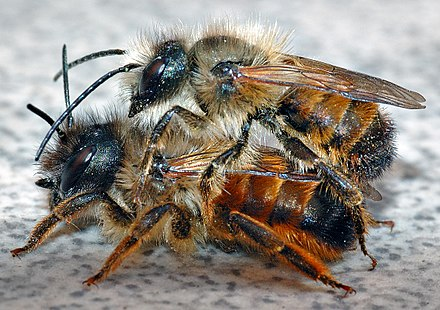

All About Bees
If you don't already know,there are many bees and many types of them, too (around 20,000 species)! In general, they can be found all over the world.
Here are the main types of bees and their functions
Honey Bees live in the hives and create the honey that we consume. They are smaller than bumble bees, and sometimes
may be confused for wasps or hornets. Like some human social systems, honey bees work in a caste system.
|
|
| You likely see this bee the most. This bee flies around looking for pollen in flowers to take back to the hive! They typically have little interest in stinging people unless they are disturbed. | |
|  | These bees are known for cutting small disc shapes out of leaves and using them to add to their homes. |
 |
As their name suggests, these bees like to dig! They typically live underground. |
| These bees create complex tunnels and nests underground. They love loose soil! |